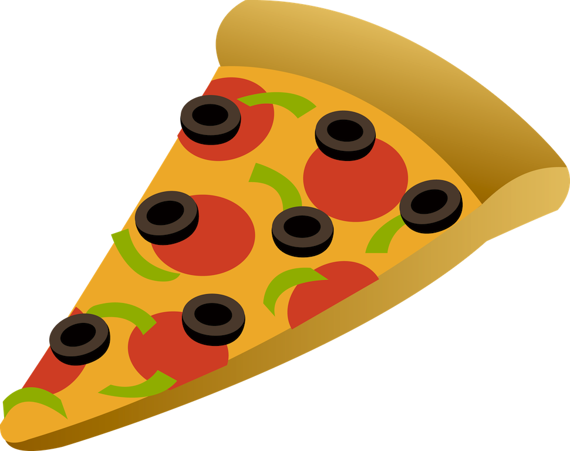

{kind=link}
Pizzeria pod Bladym Krakenem
ul. Piracka 76, Gdańsk

Oferta
Pizza z Tuńczykiem
(Sos pomidorowy, mozarella, tuńczyk, cebula)
Pizza Margarita
(Sos pomidorowy, mozarella, świeża bazylia)
Pizza Pepperoni
(Sos pomidorowy, ser, kiełbasa pepperoni)
Pizza 4 sery
(Sos pomidorowy, mozarella, gorgonzola, ser taleggio, parmezan)
Pizza Szpinakowa
(Sos pomidorowy, mozarella, szpinak z czosnkiem, cebula, gorgonzola)
Pizza Truflowa
(Pasta truflowa, mozarella, salami spinata picante, suszona papryczka, ser mascarpone)
Pizza Wegetariańska
(Sos, ser mozarella, papryka kolorowa, brokuły, kukurydza, pieczarki, oregano)
Pizza Wegańska
(Sos, pieczarki, wegańskie klopsiki, pomidory suszone, oregano)
Pizza z Krewetkami
(Sos pomidorowy, mozarella, krewetki marynowane w oliwie z habanero, szczypior, limonka)
Pizza Wiejska
(Sos pomidorowy, mozarella, ogórek kiszony, kiełbasa)
Pizza Hawajska
(Sos, mozarella, szynka prosciutto, ananas)
Pizza Kurczak i Kukurydza
(Sos pomidorowy, mozarella, kurczak, kukurydza)
Pizza:
Pomidorowy
Czosnkowy
BBQ
Ketchup
Meksykański
Piri Piri
Sos do wyboru
Frytki
Frytki z batatów
Paluchy chlebowe
Krążki cebulowe
Nachosy z serem mozarella
Przekąski
Woda niegazowana
Woda gazowana
Coca-cola
Coca-cola zero
Fanta
Sprite
Cappy jabłko
Cappy pomarańcza
Napoje
Stronę internetową opracowali: Robert Inczewski, Ewelina Bondar, Paulina Gołąbiewska, Natalia Sobisz.